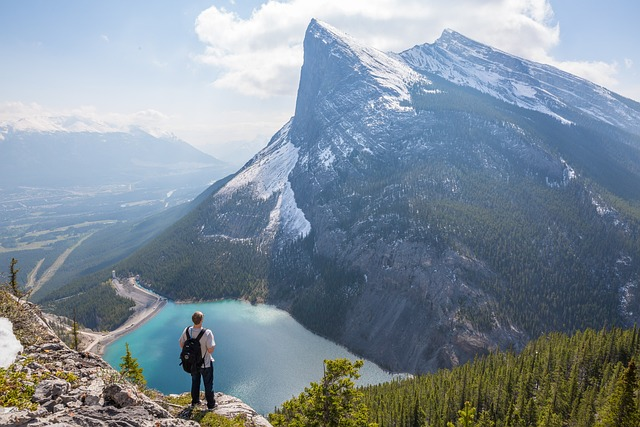

Experience the natural beauty and outdoor adventures of Banff, Alberta.
Banff is a small town located in the Rocky Mountains of Alberta, with a population of approximately 8,000 people. Incorporated in 1990, Banff is known for its stunning natural landscapes and is classified as a rural, tourist town.
